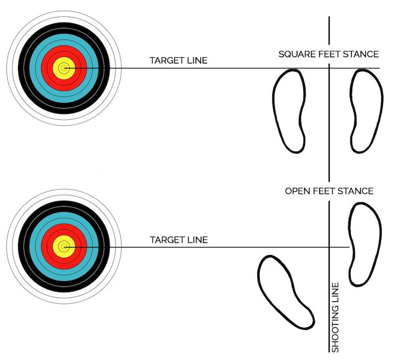
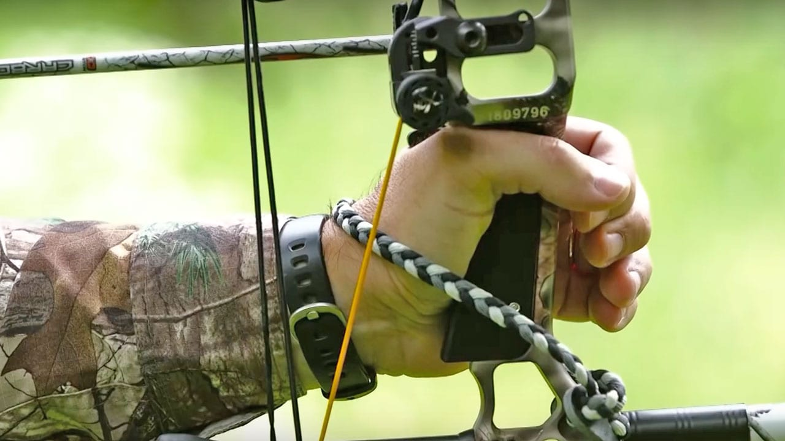
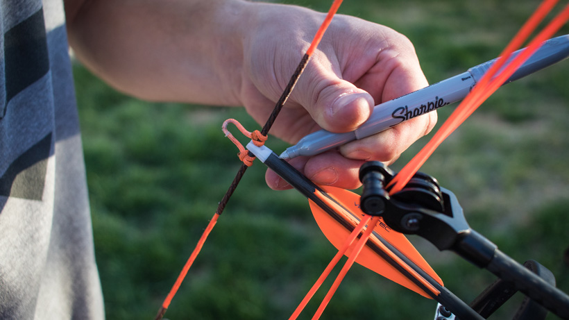
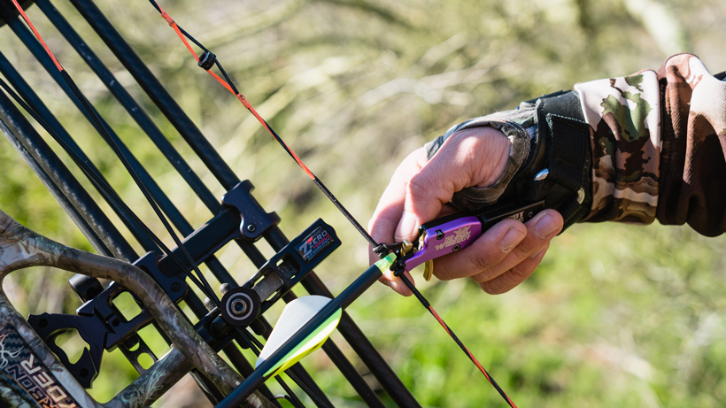
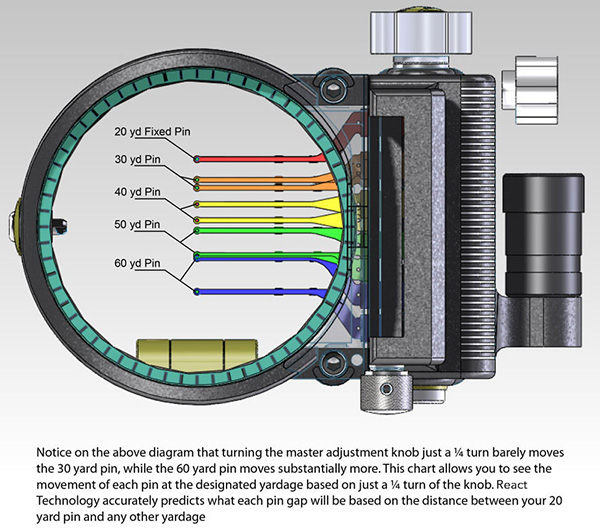
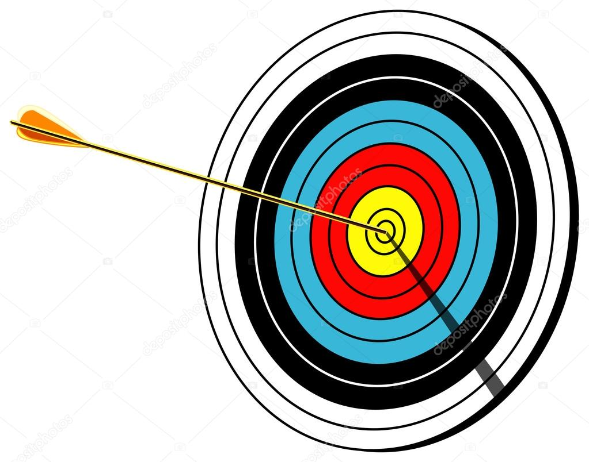

How to shoot a bow
Materials needed
- Compound Bow
- Some arrows
- A well calibrated pin sight
- Target
- Thumb release
Shooting the Bow
- Stand with feet shoulder-width apart at a right angle to target.

- Grip bow with a calm and loose hand, do not death grip it.

- Notch arrow into the rest, and snap it into the notch.

- Attach thumb release to the D-loop. DO NOT RELEASE UNTIL YOU ARE READY TO SHOOT.

- Pull bow back and plant your hand at an anchor point on your face, generally the corner of your mouth.

- Aim the correct pin to your target based on how far you're standing from it.

- Slowly lay your finger on the release to shoot, never pull it hard as it will skew your aim.
- Check to see where your shot landed! Rinse and repeat!

Video Instructions